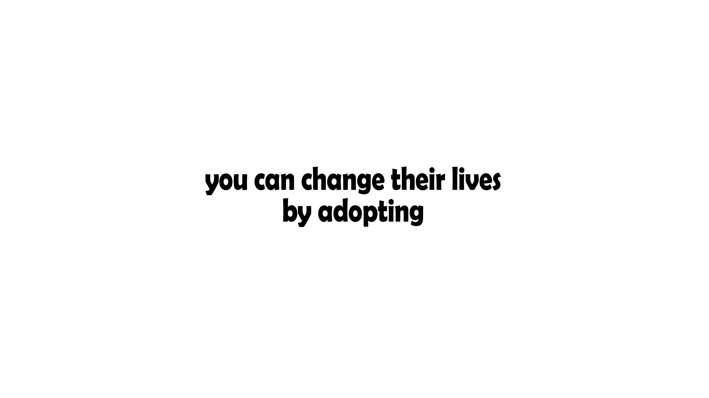
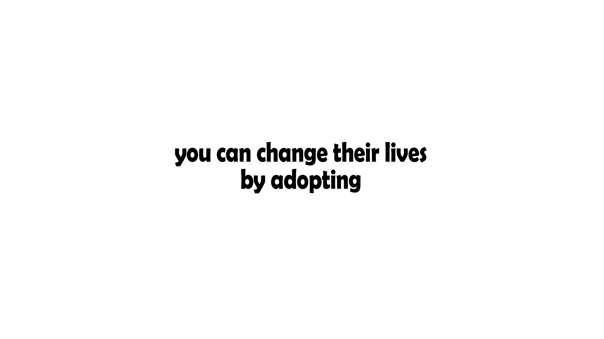
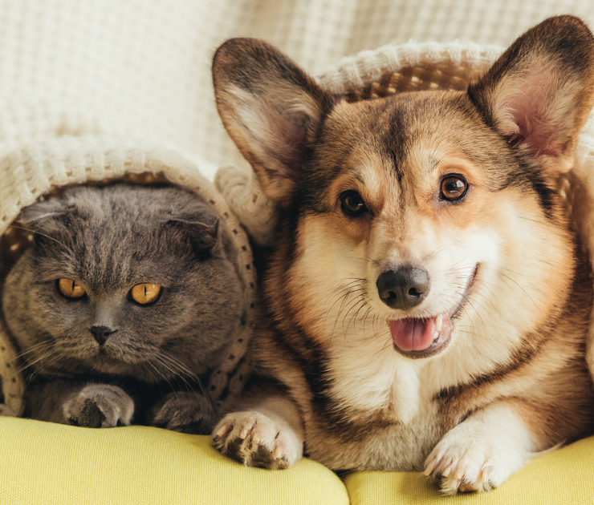

Adopt Now

Adopt Now
Hope For All Animals
Hope is an organization created to help animals in need of adoption and care, because we believe that
every animal deserves love and care.
Even though it's a small idea and the budget is limited, but any help is a help to show that we still
have humanity and love for those who need help and aid.
So any kid of help would be appreciated and who knows you might find a better friend that will follow
you till the end of your time.
While the estimates vary, approximately three to four million dogs and cats are euthanized (“put to
sleep”) each year in the United States because too few people spay or neuter the pets they have, too few
adopt their new pets, and too many give up their pets.
Because space at shelters is limited, staff
members must make the difficult decision to euthanize healthy animals that aren’t adopted within a
certain amount of time.
You can save a life by adopting a new member to your family.
Why should you adopt a pit?
Are you still concerned about adopting a pit?
Pets are just like humans, they need health care, mental care, love and much more.
you can learn more about pits and their different breeds and behaviour.
by reading the the page we made that talks about pets by pressing the read more button
Who are we?
We are a group of guys and girls, who decided to created a website that encourage those
who are planning on adopting pets and share awareness and make sure that every pet gets
a chance of being a part of every family.
